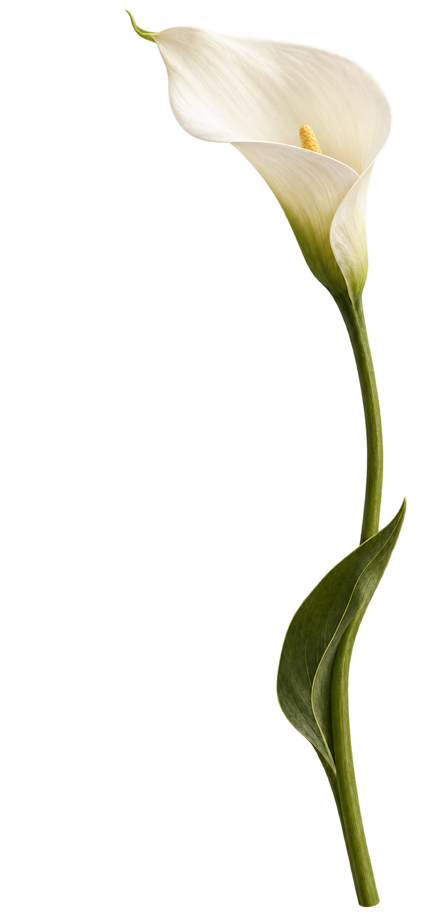
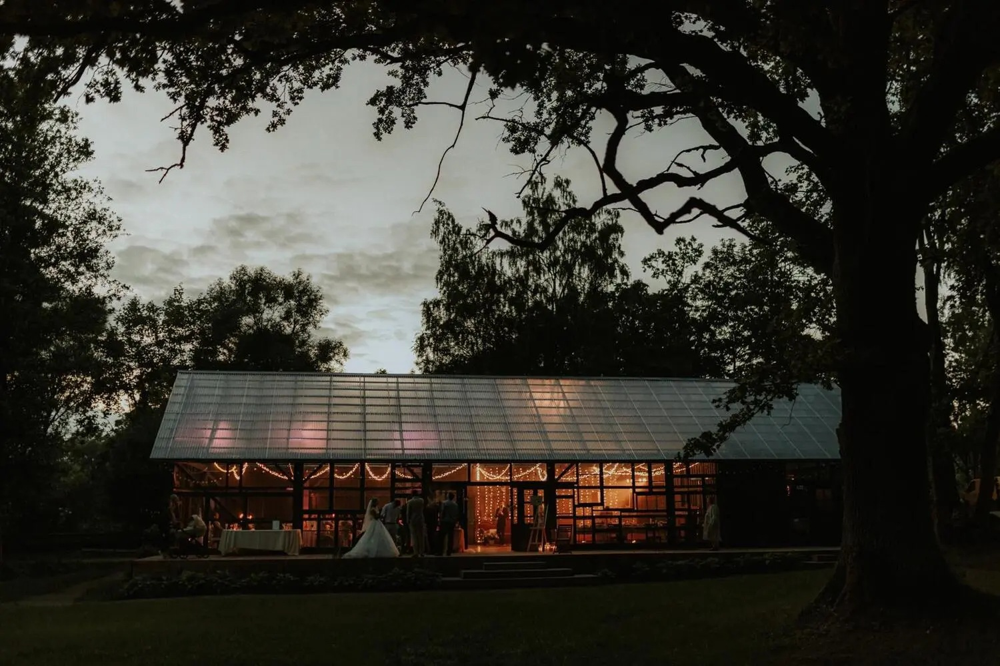
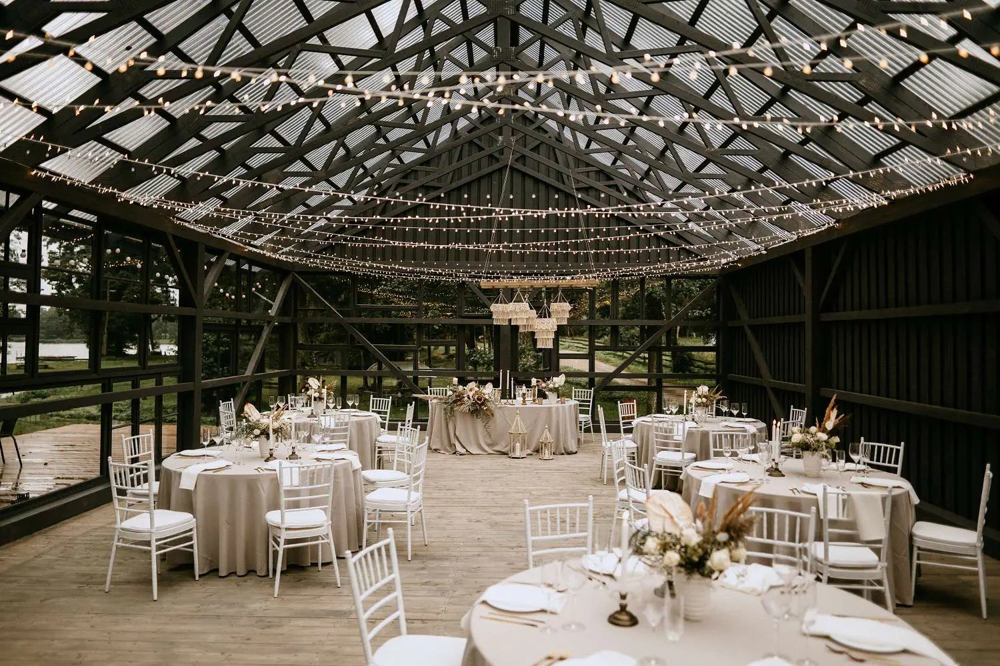
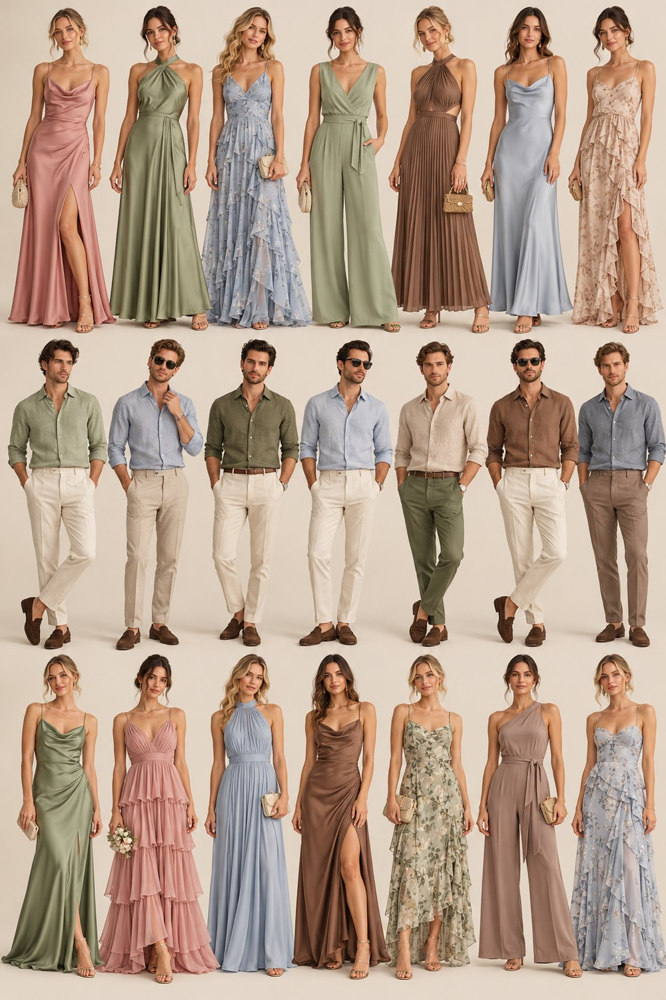

15:00
Сбор гостей
Первые объятия
и приветственные бокалы
Коснитесь печати, чтобы открыть
Марк & ПолинаПРИГЛАШЕНИЕ НА СВАДЬБУ

ПРИГЛАШАЕМ НА НАШУ СВАДЬБУ
Мы выбираем друг друга.
И хотим разделить этот день с вами.

САМОЕ ВАЖНОЕ — БЫТЬ РЯДОМ
Есть дни, которые становятся частью нашей истории.
Мы будем счастливы, если в этот день вы будете рядом —
обнимать, улыбаться и танцевать вместе с нами.
Приглашаем вас на нашу свадьбу.
СОХРАНИТЕ ДАТУ
суббота · DUNDURIŅI · ЛАТВИЯ



МЕСТО ВСТРЕЧИ
Dunduriņi
Парк, озеро Сасмакас и светлый зал со стеклянными стенами — место для долгих разговоров и счастливых воспоминаний.
Рига — 135 кмЮрмала — 97 кмВильнюс — 400 кмМажейкяй — 130 кмПодгорица — ✈ 1800 кмЛондон — ✈ 1700 км
НАШ ДЕНЬ
Время пока предварительное — окончательное расписание пришлём ближе к дате. Церемония — на природе, у озера: в случае дождя всё легко переносим в стеклянный зал.
Первые объятия
и приветственные бокалы
Самые важные слова
в окружении близких
Тёплые пожелания, тосты
и праздничный ужин
Музыка, улыбки
и танцы до утра
ДРЕСС-КОД
Нам будет приятно, если вы поддержите палитру праздника. Но это всего лишь пожелание — выбирайте тот цвет и тот наряд, в котором вы будете чувствовать себя по-настоящему красиво и комфортно. И ещё одно маленькое пожелание: лучше обойтись без очень тёмных оттенков — стены зала тоже тёмные, и на фотографиях тёмные силуэты могут немного теряться на общем фоне.
Церемония на природе: выбирайте удобную обувь и возьмите тёплый слой на вечер.
Для девушек
Шалфей, хаки, светлый эвкалипт, олива — струящиеся ткани, без чёрного и белого.
Шампань, песочный, светлый тауп и карамель — льняные костюмы и платья.
Пыльная роза, пудровый, лиловый и нюд — нежная альтернатива, отлично сочетается с зеленью.
Лёгкие платья и рубашки: дымчато-голубой, серо-синий, дымка — свежо на фоне парка.
Для парней
Те же оттенки, что и для девушек, — подойдёт любая рубашка из лёгкой ткани (лён/хлопок) и брюки в светлых или нейтральных тонах: шампань, песочный, эвкалипт, голубой, шалфей, коричневый или хаки.

ПОЖЕЛАНИЯ
Ваше присутствие — самый большой подарок для нас.
Если хотите порадовать нас ещё больше, мы будем благодарны
за вклад в наше общее будущее.
А вместо цветов можно подарить нам лотерейный билет —
вдруг именно ваш билет окажется счастливым.
ЖДЁМ ВАШЕЙ АНКЕТЫ
Несколько деталей помогут нам
позаботиться о каждом.
Ответьте, пожалуйста, до — это поможет нам всё организовать.